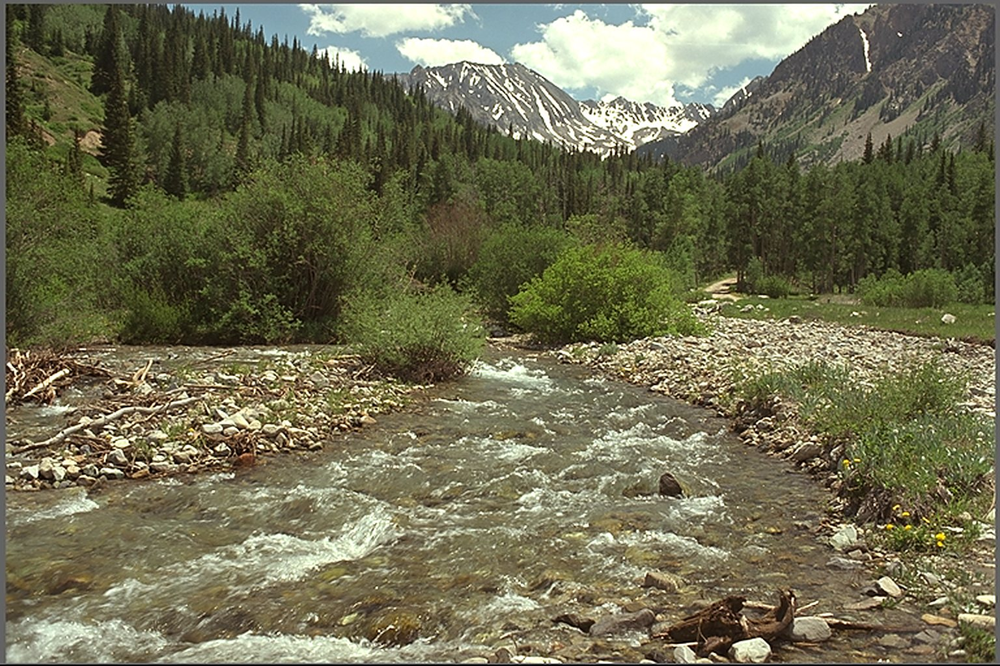
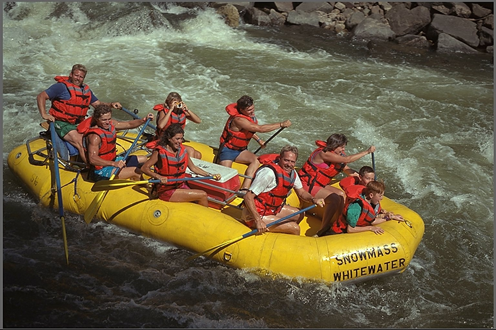

What we know
Water is up 40%
since March.
01
The snowpack is melting fast
A run of warm weeks pushed the melt forward by almost a month.

Rafting season is starting weeks early. Guides urge visitors to check conditions before heading out.
A run of warm weeks pushed the melt forward by almost a month.

Most outfitters have moved their first trips to this week.
Flow changes by stretch.
Calm sections stay open to beginners.
Flow reports update every hour.
Match it to your experience.
Helmet and vest are required.
Update every hour.
Beginners start on calm water.
Spring water is cold.